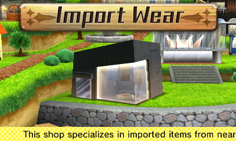

Dans Tomodachi Life, tu dois activerStreetPass au début du jeu. Après être entré dans la boutique de chapeaux pour la première fois, on te demandera de choisir ton « Article d'exportation ». Cet article est celui que tu enverras aux autres joueurs via StreetPass. En échange, tu recevras leur article d'exportation, qui sera ensuite disponible à l'achat dans ta boutique d'importation. Ces articles resteront dans ta boutique indéfiniment, même si tu ne les achètes pas tout de suite.
L'hôtel remplace le terrain vague de tomodachi life 3ds en vous permettant de gagner de l'argent si le Mii décidé de rester un peu plus longtemps ( si le Mii est satisfait de votre île , il restera un ou deux jours de plus , sinon, il repartira le lendemain) En ce qui concerne le cinéma ( condition d'obtention : avoir 10 Mii enfants et 10 Mii adultes ) : aucune utilité précise , identique au parc ou au café par exemple, Le Casino vous permet de remporter des objets une fois par jour au prix de 50 € , si trois objets identiques s'affichent , vous remportez l'objet Machine d'argent : machine fonctionnant avec dés pièces en argent uniquement , vous permettant d'avoir des objets plus rares Machine doré : utilisable seulement avec des pièces d'or , vous permettant de remporter appartements , et même un voyage dans l'espace !!!
vetements : possibilité de reprendre un article en payant la moitié de son prix initial ( note : l'article repris prendra la forme d'un sac de couleur différente lorsque vous le donnerez à un autre Mii , qui empêchera de le reprendre une seconde fois ) cadeau : entrez dans l'appartement du Mii concerné et il vous dira ceci : " ce que j'aime chez les anniversaires , c'est de recevoir pleins de cadeaux !" " Et ce que j'aime encore plus , c'est offrir des cadeaux en retour !" " Voilà un petit quelque chose pour vous , sosie de ... " Le niveau de bonheur du Mii ainsi que son état actuel influencera la valeur de votre cadeau ( note : cet événement se produit quand un mii fête son anniversaire uniquement . D'autre part , cet événement est limité à 1 par jour , 3 par semaine et 7 par mois , mais vous pourrez toujours avoir 2 Mii avec le même jour de naissance.)
Ajouts de nouveaux icônes : - cadeau : entrez dans l'appartement du Mii concerné et il vous dira ceci : " ce que j'aime chez les anniversaires , c'est de recevoir pleins de cadeaux !" " Et ce que j'aime encore plus , c'est offrir des cadeaux en retour !" " Voilà un petit quelque chose pour vous , sosie de ... " Le niveau de bonheur du Mii ainsi que son état actuel influencera la valeur de votre cadeau ( note : cet événement se produit quand un mii fête son anniversaire uniquement . D'autre part , cet événement est limité à 1 par jour , 3 par semaine et 7 par mois , mais vous pourrez toujours avoir 2 Mii avec le même jour de naissance.)
Selon la personnalité de votre Mii, il tombera amoureux, développera des adversaires, nouera des amitiés et sera une personnalité bavarde ou timide.Il existe quatre catégories qui sont ensuite divisées en quatre catégories qui vous offrent 16 personnalités uniques parmi lesquelles choisir.
| Nom du Mii | Personnalité | Caractéristique |
|---|---|---|
| Mii Sociable | Optimiste et dynamique | Organise des fêtes et aime interagir |
| Mii Rêveur | Calme et artistique | Compose des chansons ou peint des tableax |
| Mii Ambitieux | Serieux et travailleur | Devenir l'îdole de l'île |
| Mii Voyageur | Aventureux et drôle | Assurer de beaux voyages et moments |